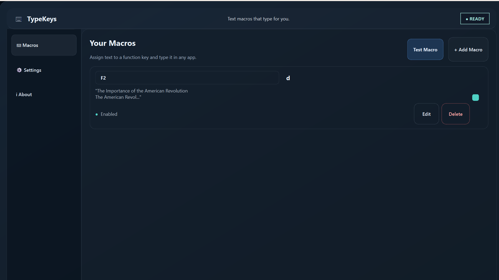

Custom Text Macros
Save repeated text and reuse it whenever you need it.
TYPEKEYS FOR WINDOWS
Save the words you use most, turn AI-generated drafts into editable text, and automate repetitive typing with TypeKeys for Windows.

Built for speed
Save repeated text and reuse it whenever you need it.
Assign supported shortcuts like F2, F3, and F4 to your recurring entries.
Configure supported typing speed settings to match your workflow.
Paste and enter multi-line text when supported by the app and destination.
Adjust timing and pacing for a more natural text-entry flow where the feature is available.
Use the desktop interface to keep your saved text entries organized and easy to manage.
Designed for Windows desktop workflows and compatible typing destinations.
Use supported simulation settings for reviewing text-entry behavior in a controlled workflow.
AI-assisted workflow
Copy a draft from your preferred AI assistant into a TypeKeys macro, review and edit it, then use TypeKeys' typing controls to enter it as keystrokes in a compatible Windows app. Optional simulated typing mistakes can add occasional typos to the typing simulation; always review the result before sending.
Use an AI assistant to create a draft, outline, or reusable response.
Paste the text into TypeKeys and make any changes needed before typing.
Configure typing speed and timing, and use optional simulated typing mistakes to add occasional typos to the simulation.
Thanks for the quick turnaround on the launch plan. We are aligned on scope, timeline, and follow-ups. I have added the customer notes for review before we send the final brief.
Simple workflow
Save recurring snippets or paste text you want to reuse.
Set supported typing speed, timing, and other available settings.
Trigger the assigned shortcut in a compatible Windows application.
Check the text in the target app and make final edits before sending.
Application showcase
Designed to keep repetitive typing simple.
Download
Get TypeKeys for Windows and simplify repetitive typing.
FAQs
TypeKeys is a free Windows desktop application that lets you create reusable text macros, assign them to supported hotkeys, and automatically type saved text into compatible applications.
Create a macro by saving the text you want to reuse, assign it to a supported function key, and press that key to type the saved text into a compatible application.
Yes! You can copy text from an AI assistant, paste it into a TypeKeys macro, review or edit it, and use TypeKeys to enter the text into a compatible application.
No direct AI integration is required to use AI-generated text with TypeKeys. Simply copy text from your preferred AI assistant and paste it into TypeKeys.
TypeKeys includes configurable typing-speed and timing options. It also offers an optional simulated-mistake setting that can introduce typos during text entry. Available behavior depends on the application's current settings and implementation.
TypeKeys' automatic mistake-correction capabilities have not been confirmed. Check the application's settings and release notes for the currently supported features.
TypeKeys is designed to enter saved text into compatible Windows desktop applications. Compatibility may vary depending on how each application handles keyboard input.
TypeKeys is built for Windows desktop use. Check the official release information for verified Windows compatibility details.
Yes! TypeKeys is free to download and use. Visit the official GitHub Releases page to find available downloads and updates.
You can find available versions of TypeKeys on the official GitHub Releases page.
Visit the official GitHub Releases page to check for new versions, review release notes, and download updates when they become available.